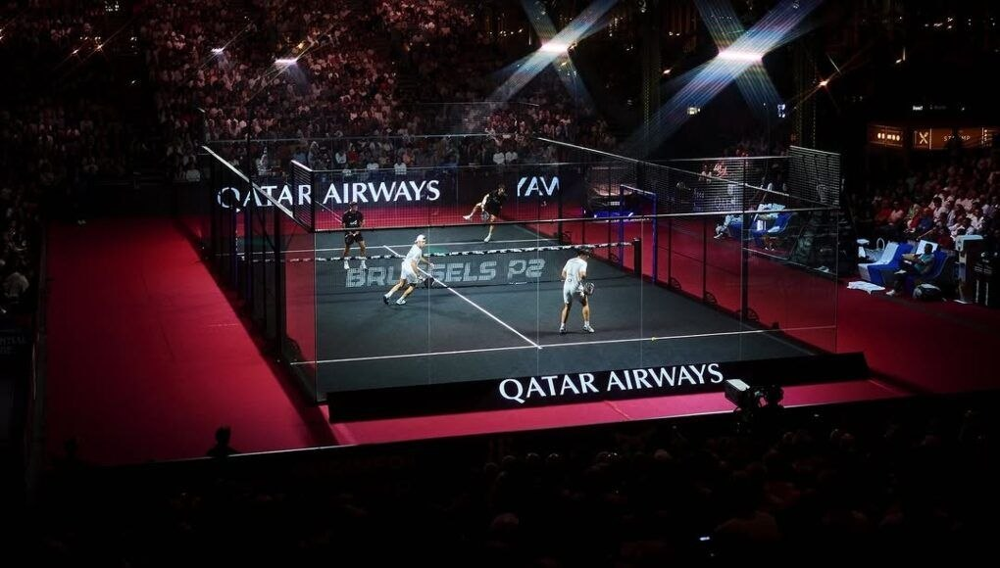
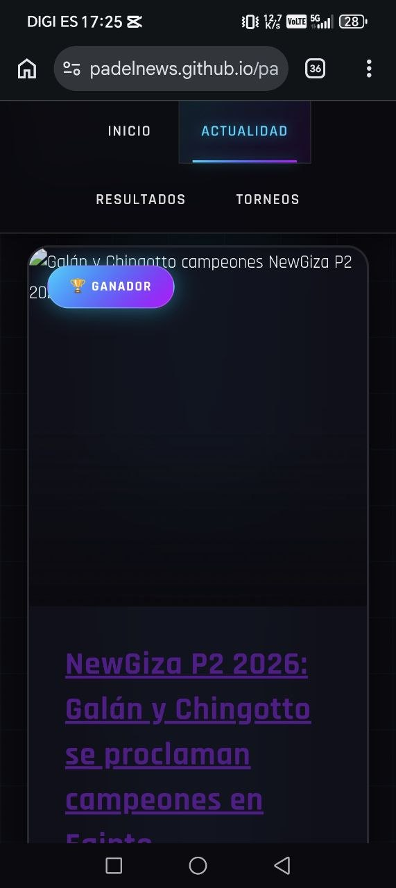

🏆 FINAL MAÑANABrussels P2 2026 - FINAL
¡La final está servida! Tapia/Coello vs Lebrón/Augsburger mañana domingo 26/04 a las 14:00. Los número uno buscarán su tercer título consecutivo del tour.
Ver Resultados en Vivo →Tu portal profesional del Premier Padel Tour - Noticias, resultados y rankings en tiempo real
🏆 BRUSSELS P2 - FINAL 26/04 14:00
🏆 FINAL MAÑANA¡La final está servida! Tapia/Coello vs Lebrón/Augsburger mañana domingo 26/04 a las 14:00. Los número uno buscarán su tercer título consecutivo del tour.
Ver Resultados en Vivo →
🏆 GANADORAlejandro Galán y Federico Chingotto han logrado un triunfo histórico en el NewGiza P2 2026, conquistando el título en Egipto tras una final impecable contra Stupaczuk/Yanguas (6-4, 6-1). En mujeres, Josemaría y González también se alzaron con el título...
Ver más →